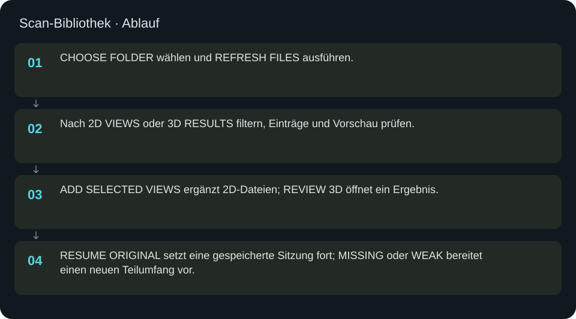
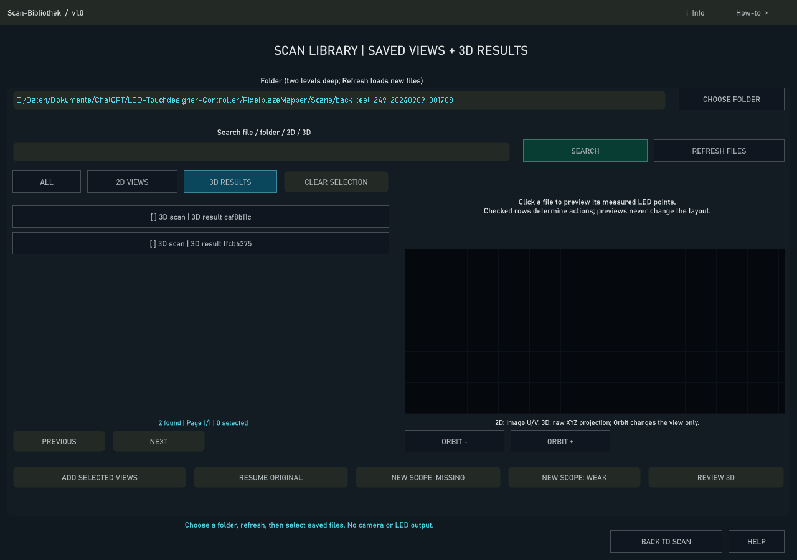

Scan-Bibliothek
Gespeicherte Kameraansichten und 3D-Ergebnisse auswählen, zuordnen und für weitere Messungen wiederverwenden.
In welcher Reihenfolge?
- CHOOSE FOLDER wählen und REFRESH FILES ausführen.
- Nach 2D VIEWS oder 3D RESULTS filtern, Einträge und Vorschau prüfen.
- ADD SELECTED VIEWS ergänzt 2D-Dateien; REVIEW 3D öffnet ein Ergebnis.
- RESUME ORIGINAL setzt eine gespeicherte Sitzung fort; MISSING oder WEAK bereitet einen neuen Teilumfang vor.


Schritt für Schritt
Gezielt auswählen
Die Bibliothek zeigt Dateien mit Kontext und einer Punktvorschau. Mehrere 2D-Ansichten können gemeinsam ausgewählt werden. CLEAR SELECTION leert nur die Auswahl, nicht die Dateien. PREVIOUS/NEXT blättert durch Treffer. ORBIT verändert nur den Blick auf die Vorschau.
Beispiel
Den bisherigen Panel-8-Ordner öffnen, 2D VIEWS filtern und passende Ansichten auswählen. ADD SELECTED VIEWS ergänzt den Scan-Dialog. Einen zugehörigen 3D-Datensatz auswählen und REVIEW 3D öffnen. NEW SCOPE: MISSING beziehungsweise WEAK bereitet Nachmessungen vor, startet aber nicht selbst die Kamera.
Originalkontext
RESUME ORIGINAL benötigt genau eine originale 2D-Ansicht mit gespeicherten Metadaten. REVIEW 3D benötigt genau ein candidate_3d.csv mit quality_pending.json. Andere 3D-Dateien lassen sich vorprüfen und über Layout importieren. MISSING bedeutet in den ausgewählten Ansichten nie erkannt; WEAK bedeutet weniger als dreimal erkannt. Beide Aktionen beginnen einen neuen Teilumfang mit leerer Ansichtsliste, behalten die Dateien aber auf der Festplatte. Eine gleich klingende Datei allein beweist weder dasselbe Panel noch dieselbe Quelle.
Eingaben & Beispiele
| Feld | Bedeutung | Beispiel |
|---|---|---|
folder | Scanordner; der Index berücksichtigt zwei Unterordnerebenen. | C:/Scans |
query | Suchtext in Datei- und Ordnernamen. | Panel8 |
Numerische Eingaben verwenden einen Punkt als Dezimaltrennzeichen. IPs, Pfade, Quellstarts und Universen zuerst mit der tatsächlichen Installation vergleichen.
Woran erkenne ich Erfolg?
Die erwartete Ansicht öffnet, Status und Vorschau entsprechen der gewählten Aktion, und es erscheint kein Fehler. Änderungen beim nächsten Laden beziehungsweise im Live-Status erneut lesen. Ein erfolgreicher Bildschirmtest beweist weder physische LED-Ausgabe noch korrekte Kameramessung.
Quellennachweis
Dateipfade im Projekt-Repository; die Onlinehilfe gibt keinen allgemeinen Dateisystemzugriff frei.
pixelblaze_mapper/scan_library_ui.py
Dialog: /project1/guided_scan/library_panel